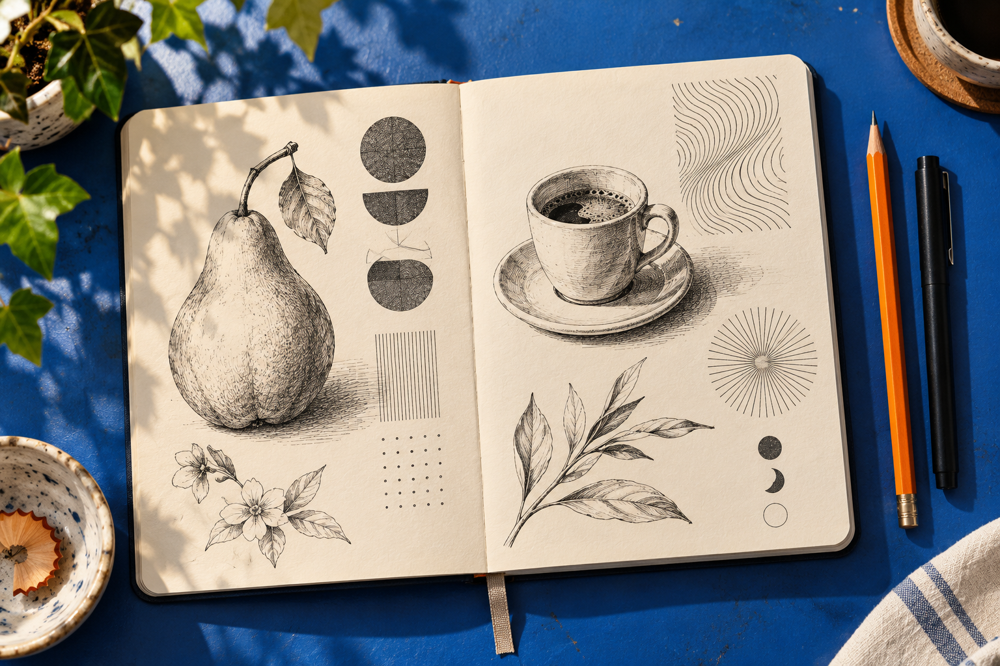
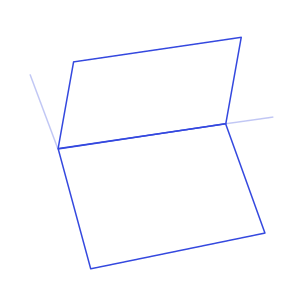
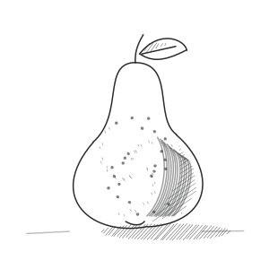
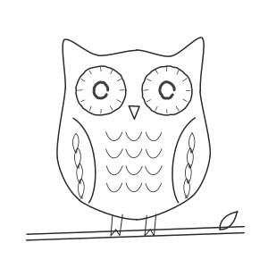

Скетчинг
Обычные предметы, природа и небольшие места. Силуэт, пропорции, перспектива и свет.
НЕМНОГО ВРЕМЕНИ. НЕСКОЛЬКО ЛИНИЙ. ЧТО-ТО СВОЁ.
Тихий скетчбук для iPhone и iPad. Найдите первую линию, продолжите её — и позвольте рисунку остаться немного несовершенным.
Посмотреть, как устроен урокГотовимся к App Store · iOS 17+

ОТ ПРОСТОЙ ФОРМЫ К МАЛЕНЬКОЙ ИСТОРИИ
Строим коробку, намечаем слайс, добавляем детали. Затем свет, тени и несколько свободных линий фона собирают всё в небольшую сцену.
Находим наклон и пропорции лёгкими вспомогательными формами.
Добавляем толщину картонных стенок и сгиб крышки.
Вписываем треугольный слайс, оставляя место с каждой стороны.
Добавляем неровные линии сыра, начинку и округлую корочку.
Намечаем контактные тени и сохраняем одно направление света.
Ставим коробку на стол и оставляем фон более спокойным.

ЧЕТЫРЕ СПОСОБА НАЙТИ СВОЙ РИТМ
Обычные предметы, природа и небольшие места. Силуэт, пропорции, перспектива и свет.
Маленькие персонажи и забавные истории из простых форм.
Листья, волны и повторяющиеся узоры в собственном ритме.
Вводные упражнения со структурированными узорами. Небольшое пространство для внимания к каждой линии.
Кофе, растения, животные, архитектура, еда и не только. Девять тематик с постепенным ростом сложности.


БУМАГА ИЛИ ЭКРАН
Начните с бумаги и карандаша или рисуйте на встроенном холсте пальцем либо Apple Pencil. Раздел «Инвентарь» поможет выбрать только нужное. Включите собственную спокойную музыку приложения, когда захочется более тихой атмосферы.
Начните с четырёх бесплатных уроков и просматривайте все образцы рисунков.
4,99 €
Все 80 уроков. Без подписки и автоматических продлений. App Store покажет цену в вашей валюте до оплаты; она может отличаться в разных регионах.
Приложение готовится к выпуску.
Да. Начните с линий и простых форм, затем переходите к более подробным сценам. В уроках есть объяснение, с чего начать и что проверить.
Уроки, иллюстрации, холст и встроенная музыка работают офлайн. Для покупки и восстановления доступа нужны App Store и интернет.
Нет. Рисунки, избранное и прогресс остаются на вашем устройстве. В приложении нет аккаунтов, рекламы, аналитики и публичной галереи.
Откройте «Восстановить покупку» в настройках с тем же Apple ID. Это вернёт подходящий оплаченный доступ без повторной оплаты, но не перенесёт локальные рисунки.